Francisco Plaza-Vega
Universidad de Santiago de Chile
Seismic learning tasks · Research cases · Guided modelling and discussion
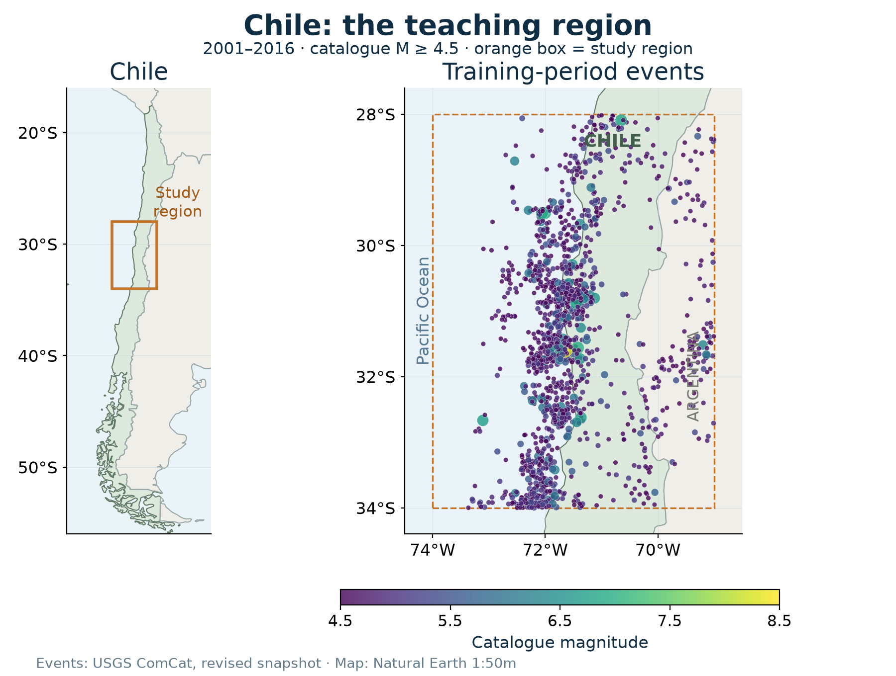
Signals reveal recorded events.
Catalogues describe event histories.
Models turn histories into questions about what may follow.
What information do we represent, and what do we ask a model to learn?
Map: frozen USGS training catalogue and Natural Earth. Illustrates today’s regional setting.
| Example | Input | Learning task |
|---|---|---|
| ConvNetQuake · 2018 | Recorded waveforms | Detect events and classify their source region |
| RECAST · 2023 | Past event times and magnitudes | Estimate the next-event time distribution |
| Delgado et al. · 2025 | Features of catalogued events | Classify foreshock, mainshock and aftershock labels |
| Farfán et al. · 2025 | Sequences of daily spatial grids | Forecast gridded seismic activity |
Today’s practical: 30 days of history and a seven-day occurrence probability.
Represented data → Neural network → Defined output
Compare with a target → Compute a loss → Update weights
Architecture determines how information is combined.
Training adjusts weights to reduce the loss.
The output and the loss must match the scientific question.
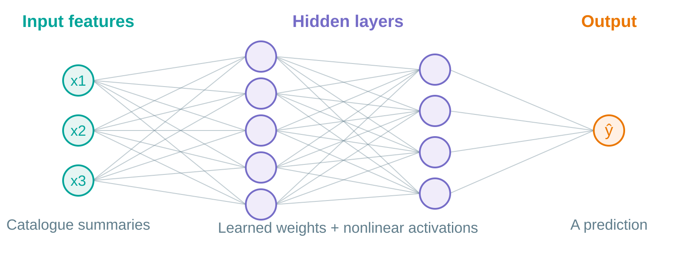
A multilayer perceptron learns nonlinear combinations of a feature vector.
Optional extension: the MLP uses 90 values at fixed lag positions. Diagram adapted from the author’s DL course, Unit 2.
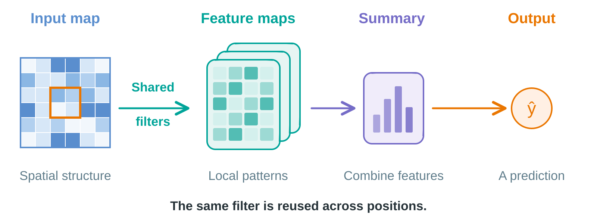
The same filter examines different neighborhoods.
Optional extension: CNN1D shares filters across days. Diagram adapted from the author’s DL course, Unit 3.
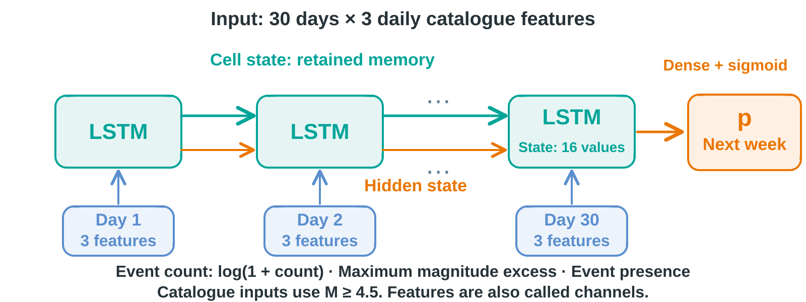
Today’s example: 30 × 3 input → state (16) → Dense + sigmoid → weekly probability
Output: probability of at least one catalogue M ≥ 5 event in the next seven days.
Adapted from the author’s DL course, Unit 4.
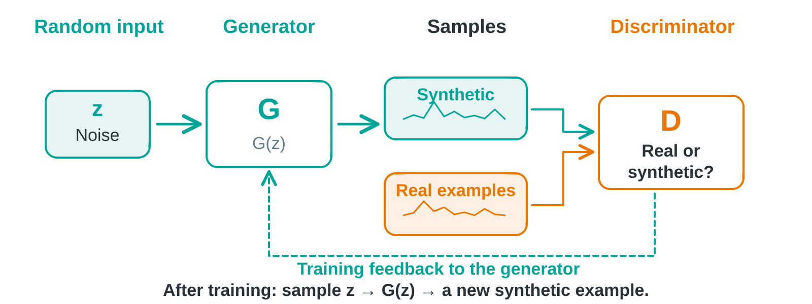
The output of G is a new data sample, such as a synthetic sequence.
Later case: mainshock conditions + noise → a possible aftershock sequence.
GAN schematic adapted from the author’s DL course, Unit 5.
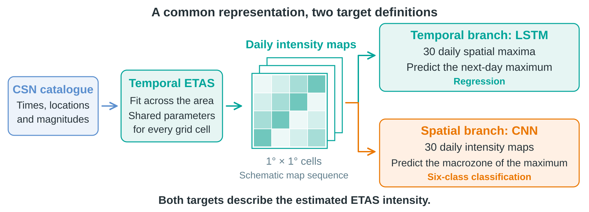
Nicolis, Plaza & Salas · Spatial Statistics 42 (2021), 100442 · CSN Chile, 2000–2017
\lambda(t\mid\mathcal H_t)=\mu+\sum_{t_i<t}\text{contribution from event }i
Background + magnitude-dependent contributions that decay with time
Published construction: common ETAS parameters applied across 1° × 1° cells produce a sequence of intensity maps.
A map value is an estimated occurrence rate, not an earthquake magnitude.
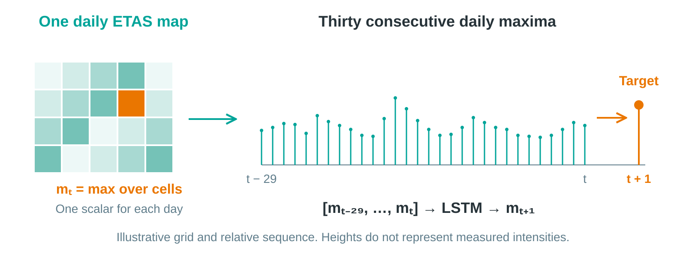
30 daily spatial maxima → LSTM → next-day maximum intensity
Nicolis, Plaza & Salas (2021) · Original published regression task · Diagram illustrates the operation, not measured values
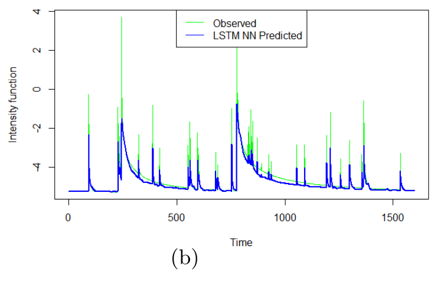
M ≥ 6 setting · Table 3
| Model | RMSE | R² |
|---|---|---|
| ETAS | 0.5475 | 0.6241 |
| LSTM | 0.5296 | 0.6561 |
Lower error and higher R² for this reported comparison.
The network tracks a model-derived target; this is not a direct event-probability test.
Nicolis, Plaza & Salas (2021), Figure 5(b) and Table 3 · Original plotting scale retained
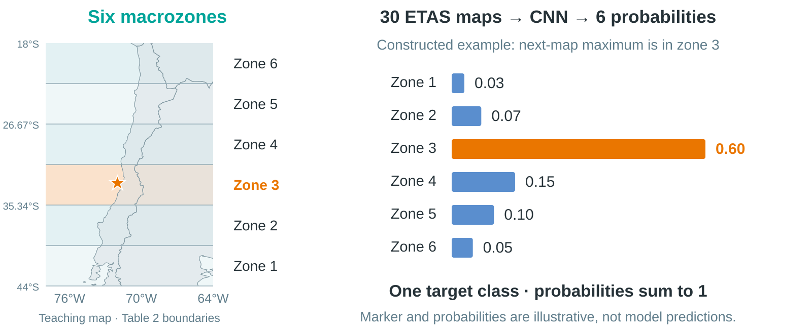
The target is one macrozone containing the next day’s maximum ETAS intensity.
Nicolis, Plaza & Salas (2021), Table 2 · Natural Earth geography · Marker and probabilities are illustrative
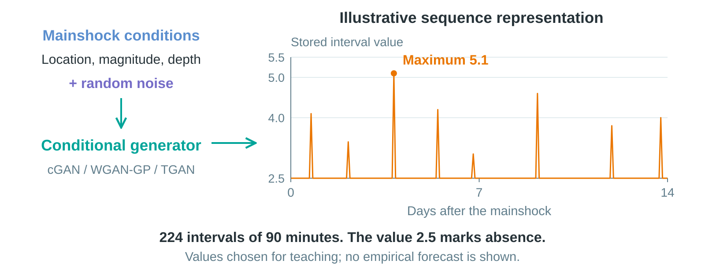
The intended output is a possible sequence conditioned on a mainshock.
Jara Muñoz (2025) · Undergraduate thesis in Statistical Engineering · Universidad de Santiago de Chile
GANT · case B
━━ Observed reference
━━ Generated sequence
Vertical axis: interval maximum magnitude (Mw).
2.5 marks absence.
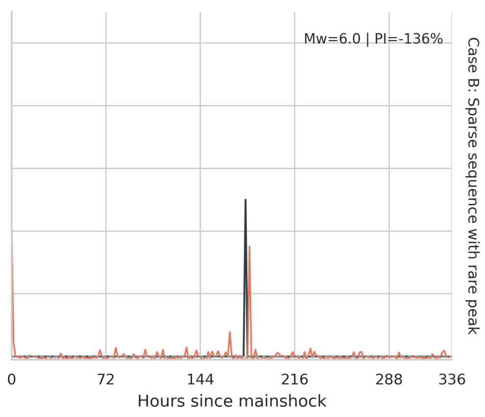
Compare occurrence, peak magnitude and timing, as well as the shape of the curve.
2026 manuscript under review, Figure 4 · One case from the primary random split · Original PI = −136% for this case
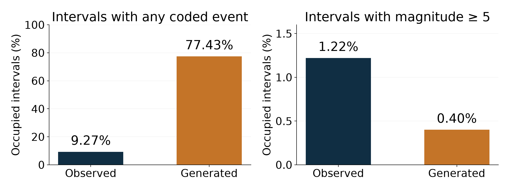
GANT overproduces occupied intervals while underrepresenting intervals with M ≥ 5.
2026 manuscript under review · Temporal evaluation · Percentages of intervals, not total event counts
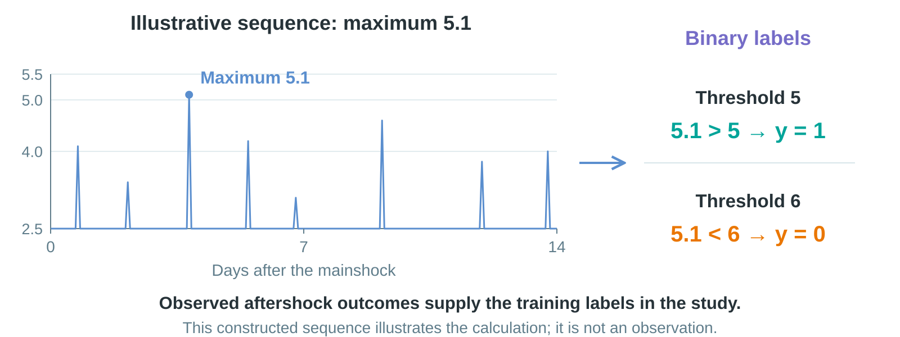
Mainshock features → classifier → probability of at least one qualifying aftershock
Manuscript under review · 14 days, 100 km · Observed outcomes define labels; the displayed sequence is constructed
Reported target (Table 9): at least one Mw ≥ 6 aftershock within 14 days and 100 km.
| Evaluation scheme | Best reported classifier | ROC-AUC |
|---|---|---|
| Random split | Random Forest | 0.816 |
| Temporal split | Gradient Boosting | 0.672 |
| Geographic split | Random Forest | 0.642 |
Each row selects the best model in its own evaluation. Models and evaluation samples differ.
These AUCs measure discrimination. They do not establish calibrated probabilities.
Plaza-Vega, Jara, Nicolis & Salinas (2026), manuscript under review · Table 9 · Magnitude-threshold classification
History available at the origin → ETAS-derived information → Conditional generator
Possible role: supply a conditioning variable or a constraint on generated sequences.
Question: does that addition improve occurrence, magnitude and temporal structure under a fixed evaluation?
This is a proposed research direction. No hybrid results are shown here.
Future work discussed in the manuscript · The tutorial’s illustrative activity score is a separate feature experiment
| Case | Representation | Output |
|---|---|---|
| Spatial Statistics | ETAS maps and daily maxima | Intensity maximum and its macrozone |
| Generative study | Mainshock conditions and noise | A possible binned aftershock sequence |
| Classification study | Mainshock predictors; observed outcome labels | Occurrence or exceedance probability |
| Today’s practical | Daily catalogue channels | Weekly occurrence probability |
Core example: references, LSTM and probability evaluation. Optional comparisons: Transformer and spatial models.
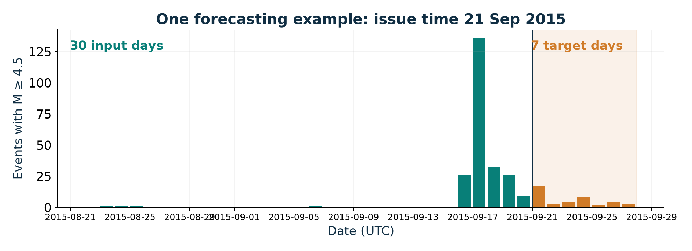
30 past days → probability of at least one catalogue M ≥ 5 event in seven days.
One input: 30 days × 3 channels · Region: 28–34°S, 69–74°W · Input M ≥ 4.5 · Monday origins
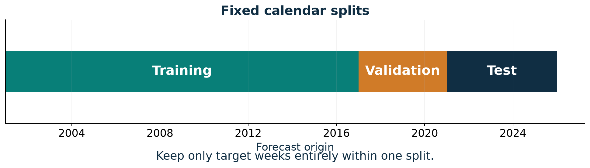
Today we compare validation probabilities using Brier score, log loss and calibration.
Train 2001–2016 · Validation 2017–2020 · Test 2021–2025 was inspected previously and is excluded from this comparison.
30 days × 3 catalogue channels → LSTM → weekly probability
Build one example: identify the input window, forecast origin and label.
Fit references and the LSTM: read compile, fit and predict beside the model.
Evaluate: compare Brier score, log loss and calibration.
Does the LSTM improve on training prevalence and logistic regression in this experiment?
Temporal tutorial and notebook · Seed 7 · Optional comparison: Transformer on the same history and target
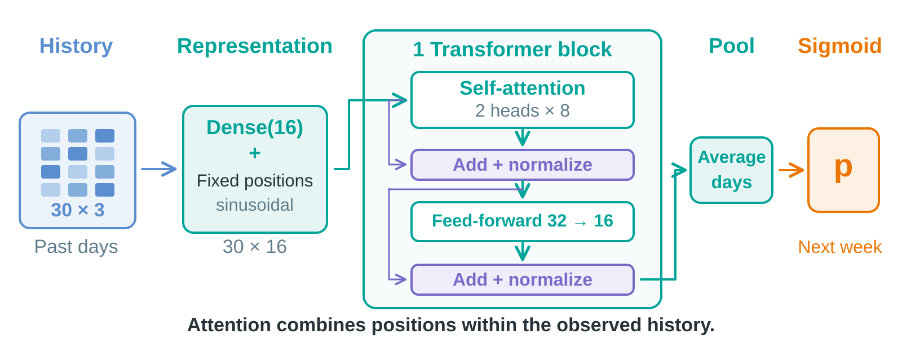
Same history and target. A different way to combine information across days.
Current temporal tutorial · 2,257 trainable parameters versus 1,297 for LSTM · One fixed, small configuration
| Model | Validation Brier | Validation log loss |
|---|---|---|
| Training prevalence | 0.188 | 0.563 |
| Logistic regression | 0.204 | 0.614 |
| LSTM | 0.182 | 0.548 |
| Transformer (optional) | 0.188 | 0.562 |
Lower is better. The LSTM has the lowest losses in these individual fits. Read calibration alongside them.
These are development results from one region and one validation period.
One fit per neural model, seed 7 · 208 validation weeks · Display rounded to three decimals
Reading the validation results
Compare each model with training prevalence.
Read Brier, log loss and calibration together.
Questions for the next experiment
Which representation and target preserve useful structure?
What information is available in the catalogue?
Would more data, capacity or a different training budget change the result?
Useful deep learning depends on how we represent the phenomenon and formulate the task.
Validation also controls early stopping. One seed does not measure initialization sensitivity.
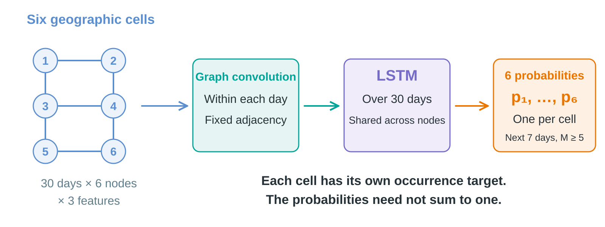
Graph connections share spatial information; the LSTM summarizes each node’s history.
Input/output introduction · Complete graph example for optional exploration
Deep learning offers flexible tools. Their scientific value depends on the question and the evidence.
Further exploration: optional reading and experiments · LSTM references and optional extensions
inputs = keras.Input(shape=(30, 3))
state = keras.layers.LSTM(16)(inputs)
probability = keras.layers.Dense(1, activation="sigmoid")(state)
model_lstm = keras.Model(inputs, probability)
model_lstm.compile(optimizer="adam", loss="binary_crossentropy")
history_lstm = model_lstm.fit(
X_train, y_train, validation_data=(X_val, y_val),
epochs=20, batch_size=64, callbacks=[stopping_lstm], shuffle=False)
p_lstm = model_lstm.predict(X_val).ravel()
brier = np.mean((p_lstm - y_val) ** 2)Define the model · compile · fit · predict · evaluate probabilities
| Quantity | Question answered |
|---|---|
| Process intensity | At what conditional rate do events occur? |
| Magnitude | How large is an event? |
| Shaking intensity | What motion or effects occur at a location? |
| Risk | What consequences may occur given exposure and vulnerability? |
Today’s output is a probability of a defined occurrence event.
r_t(s)=\sum_{t-L\le t_i<s}10^{\alpha(M_i-M_0)} \left(1+\frac{s-t_i}{c}\right)^{-p},\quad s\le t.
Illustrative: α=1, c=1 day, p=1.1, L=30 days.
Controlled comparison: both LSTMs use the same available history.
Representation: log1p(score) is an additional daily channel.
Optional representation experiment. The illustrative index is not a fitted ETAS rate.
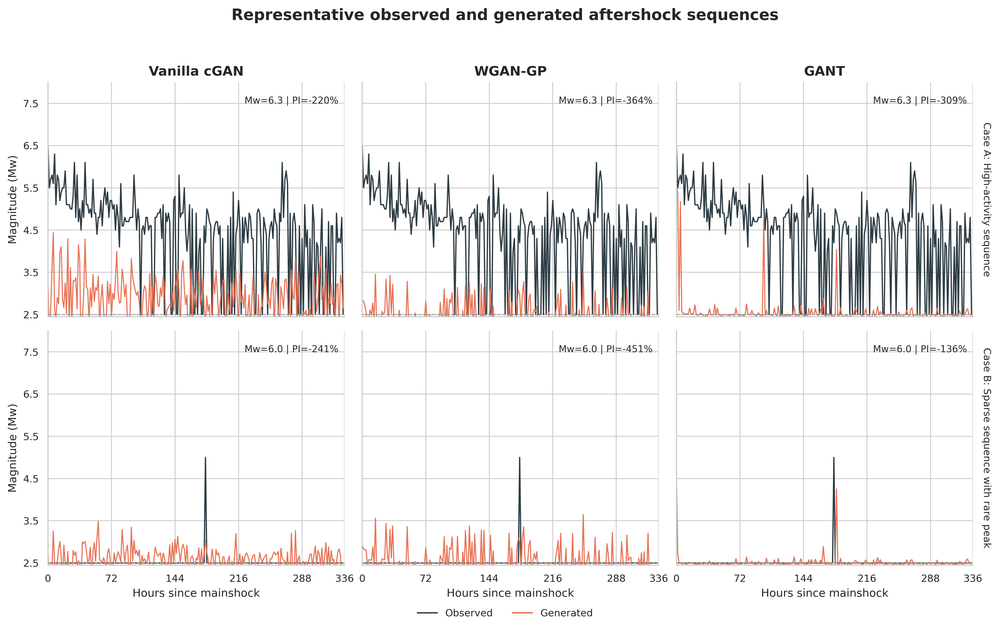
2026 manuscript under review · Original PI annotations use a mean-reference denominator · Illustrative cases
| Check | Meaning |
|---|---|
| Chronological, purged targets | Future target intervals do not cross partitions. |
| Training-only normalization | Later inputs do not set scaling parameters. |
| Frozen revised catalogue | Data bytes and provenance are reproducible. |
| Historical catalogue vintages | Not reconstructed. |
Reproducibility and historical information availability are separate requirements.
STATSEI14 · 13 October 2026